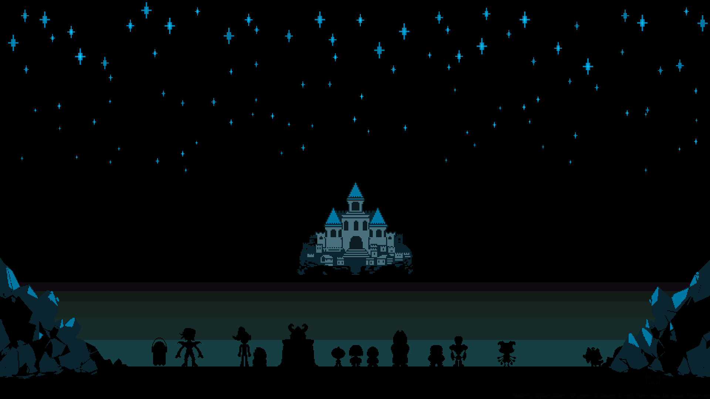

UNDERTALE
Undertale es un juego de rol en 2D creado por Toby Fox en 2015. En él, el jugador controla a un niño que ha caído al subsuelo, una gran región aislada bajo la superficie de la Tierra y separada por una barrera mágina. El jugador se encuentra con varios monstruos durante su viaje de regreso a la superficie.
Trama
La historia de Undertale toma lugar en el subsuelo, un reino en el que los monstruos fueron desterrados después de que la guerra empezase entre ellos y los humanos. El lugar fue sellado con una barrera mágica con el único punto de entrada en el Monte Ebott. El juego empieza con un niño que se ha caído al subsuelo. Se encuentra con Flowey, una flor que le enseña al joven la mecánica del juego y le incita a que suba su «LV», o «LOVE». Cuando Flowey intenta asesinar al humano para conseguir su alma, el humano es rescatado por una monstruo cabra con instinto maternal llamada Toriel, quien le enseña al niño cómo resolver puzzles y cómo resolver los conflictos en el mundo subterráneo sin matar a nadie. Ella le revelará su intención de adoptarlo para que viva con ella en las Ruinas para siempre, y así protegerlo de Asgore Dreemurr, el rey del subsuelo.
El humano finalmente abandona a Toriel para buscar el castillo de Asgore, que contiene la barrera que conduce al mundo de la superficie. En el camino, el humano se encuentra con varios monstruos, incluidos los esqueletos Sans y Papyrus, dos hermanos que actúan como centinelas del bosque Snowdin; Undyne, la jefa de la guardia real; Alphys, la científica real del reino; y Mettaton, un presentador de televisión robótico creado por Alphys. Algunos de ellos son combatidos, y el humano tiene que elegir entre matarlos o mostrar misericordia; si el humano los perdona, pueden optar por hacerse amigos. Durante sus viajes, el humano aprende la causa de la guerra entre humanos y monstruos. Asgore ahora busca romper la barrera, lo que le obliga a recolectar siete almas humanas, de las cuales tiene seis.
CRÍTICAS
- El mejor juego de la historia
Undertale me parece el mejor juego de la historia, y es que además de que su música es increíble y única y te transporta a millones de emociones, tiene lecciones de moral, decisiones frustrantes y sientes todas las emociones al jugarlo. - Estas orgulloso de tus actos?
Empezaré diciendo que es un juego unico que no se parece a nada que haya jugado antes,desde el diseño y personalidad de los personajes hasta la formula de combate que tiene el titulo. Tiene una musica al nivel de las bandas sonoras mas miticas de la historia,os aseguro que si dentro de 15 años me ponen una cancion del juego me voy a acordar al segundo - Undertale - Metacritic Great game I loved it in this game you go through many different areas and meet many unique characters and it has amazing bossfights but my favourite part is probably the music in the game